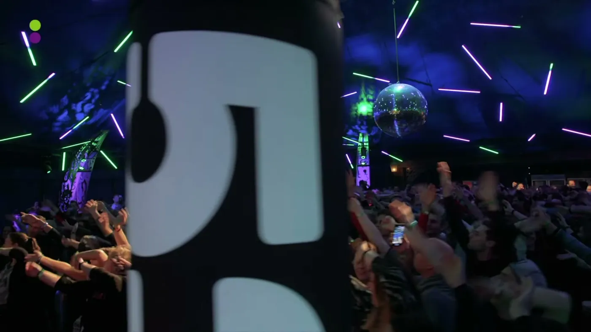
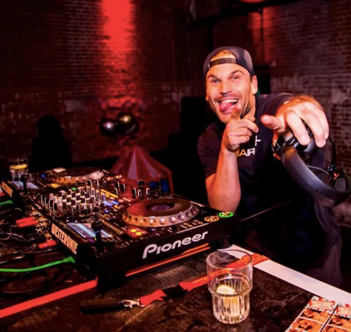

Muziek
Muziek die een zaal laat bewegen
Larz produceert en mixt zelf: workout-mixen voor trainers en sporters, een playlist die meegroeit en dj-sets die een event van warming-up naar feest brengen.
Luister
Van ochtendworkout tot dansvloer
Larz op Spotify
De playlist van Larz, met de tracks waar hij zelf op traint, lesgeeft en draait. Klik om de speler te laden; daarna speelt hij hier op de pagina.
Open in Spotify
Larz Workout Energy Mix: Wakker worden met LarzHealthyFest 2018, de ochtendworkout voor het hele festival
Slo Moshun, The Bells of NY (Larz Rework)Gold Edit, Clash of '97 versus Larz
Alle mixen en editsHet volledige SoundCloud-profiel van Larz (NL)
Home workouts en one track workoutsVideo's met muziek en training in één, op YouTube

Dj-setAls verlengstuk van het energy moment
Voor events
Eén man voor de energie én de muziek
Bij een afsluiter draait Larz door als dj. Geen wissel op het podium, geen tweede boeking: de beat die de zaal in beweging bracht, loopt gewoon door de borrel in.
- Eigen edits en reworks, geen standaard setlist
- Tempo afgestemd op het moment van de dag
- Te combineren met opener, energy moment of hosting

GratisTe streamen voor je eigen les
Voor trainers en sporters
Gebruik de mixen in je eigen training
De workout-mixen zijn gemaakt om op te trainen: opbouw, tempo en pieken zijn afgestemd op een les. Zet ze aan in je groepsles, je personal training of je eigen rondje hardlopen.
- Mixen met een opbouw van warming-up tot piek
- Nieuwe tracks komen in de Spotify-playlist
- Volg @larznl voor nieuwe releases